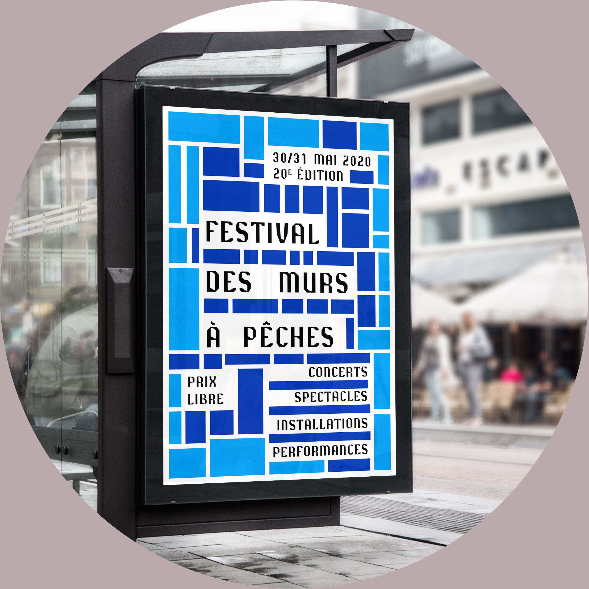
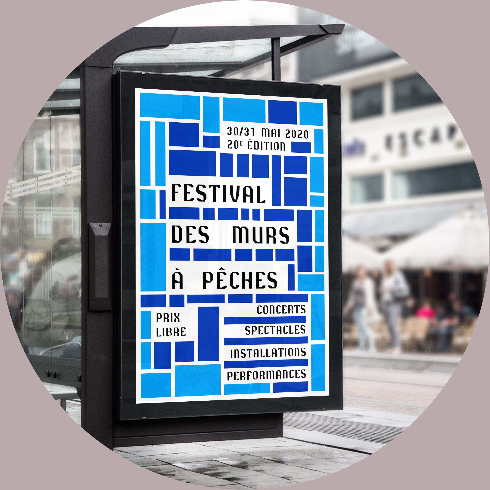

Projets
Projets de commandes (fictives)


 



Projet : Création d’un pop-up urbain.
Dimensions : 42 x 29,7 x 28 cm
Ce pop-up urbain est composé de plusieurs formes rectangulaires en trichromie et en valeur de gris. Les découpes variées permettent un jeu d’apparition et de disparition. Le rythme est créé avec les diffé-rentes tailles et variations de couleur. Le sol noir met en avant les batiments colorés. Un contraste se forme entre les batîments rectilignes et la disposition aléatoire des éléments sur le sol.